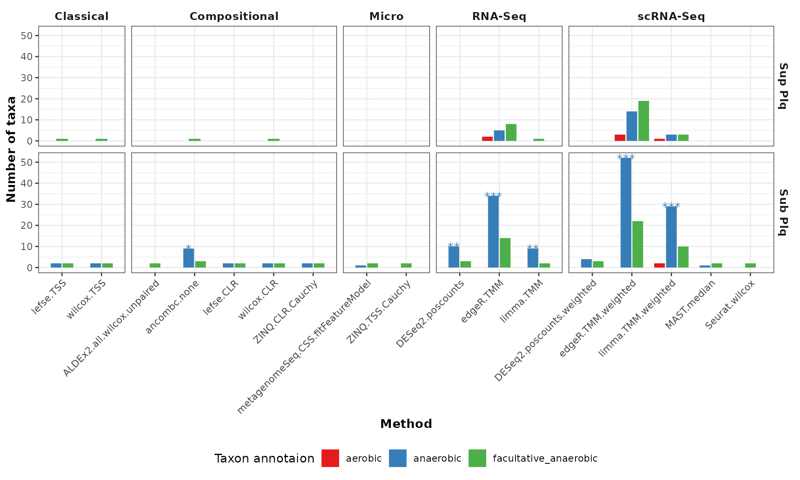
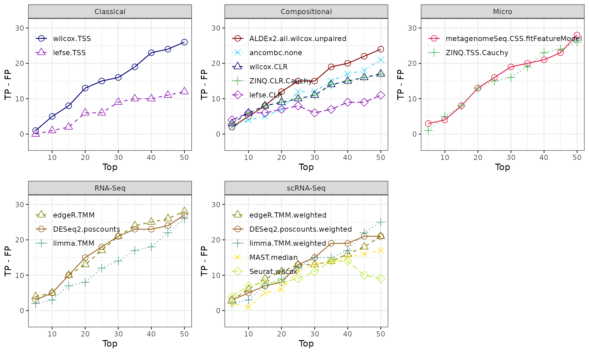

HMP_2012_16S_gingival_V13 - subgingival vs supgragingival plaque
HMP_2012_16S_gingival_V13.Rmd
library(MicrobiomeBenchmarkDataAnalyses)
library(MicrobiomeBenchmarkData)
library(mia)
library(phyloseq)
library(magrittr)
library(benchdamic)
library(dplyr)
library(ggplot2)
library(gridExtra)Data
Import dataset:
dat_name <- 'HMP_2012_16S_gingival_V13'
conditions_col <- 'body_subsite'
conditions <- c(condB = 'subgingival_plaque', condA = 'supragingival_plaque')
tse <- getBenchmarkData(dat_name, dryrun = FALSE)[[1]]
tse
#> class: TreeSummarizedExperiment
#> dim: 33127 311
#> metadata(0):
#> assays(1): counts
#> rownames(33127): OTU_97.1 OTU_97.10 ... OTU_97.9997 OTU_97.9999
#> rowData names(7): superkingdom phylum ... genus taxon_annotation
#> colnames(311): 700103497 700106940 ... 700111586 700109119
#> colData names(15): dataset subject_id ... sequencing_method
#> variable_region_16s
#> reducedDimNames(0):
#> mainExpName: NULL
#> altExpNames(0):
#> rowLinks: a LinkDataFrame (33127 rows)
#> rowTree: 1 phylo tree(s) (33184 leaves)
#> colLinks: NULL
#> colTree: NULLFilter data
- Subjects from the same run center and the first visit.
col_data <- as.data.frame(colData(tse))
col_data_sub <-
dplyr::filter(col_data, run_center == 'WUGC', visit_number == 1)
col_data_split <- split(col_data_sub, factor(col_data_sub$body_subsite))
subjects <- intersect(
col_data_split$subgingival_plaque$subject_id,
col_data_split$supragingival_plaque$subject_id
)
male_subjects <- dplyr::filter(
col_data_sub,
subject_id %in% subjects, gender == 'male'
) %>%
dplyr::pull(subject_id) %>%
unique()
female_subjects <- dplyr::filter(
col_data_sub,
subject_id %in% subjects, gender == 'female'
) %>%
dplyr::pull(subject_id) %>%
unique()
n <- min(length(male_subjects), length(female_subjects))
set.seed(1234)
select_subjects <- c(sample(male_subjects, n), sample(female_subjects, n))
select_samples <- rownames(col_data_sub)[
col_data_sub$subject_id %in% select_subjects
]
tse_subset <- tse[,select_samples]
tse_subset <- filterTaxa(tse_subset)
tse_subset
#> class: TreeSummarizedExperiment
#> dim: 1233 96
#> metadata(0):
#> assays(1): counts
#> rownames(1233): OTU_97.10 OTU_97.1000 ... OTU_97.9900 OTU_97.995
#> rowData names(7): superkingdom phylum ... genus taxon_annotation
#> colnames(96): 700103497 700106940 ... 700024964 700103572
#> colData names(15): dataset subject_id ... sequencing_method
#> variable_region_16s
#> reducedDimNames(0):
#> mainExpName: NULL
#> altExpNames(0):
#> rowLinks: a LinkDataFrame (1233 rows)
#> rowTree: 1 phylo tree(s) (33184 leaves)
#> colLinks: NULL
#> colTree: NULLPrior information
OTU level:
row_data <- as.data.frame(rowData(tse_subset))
prior_info <- row_data[, c('genus', 'taxon_annotation')]
prior_info$taxon_name <- rownames(row_data)
prior_info$new_names <- paste0(prior_info$taxon_name, '|', prior_info$genus)
prior_info <-
dplyr::relocate(prior_info, taxon_name, new_names, genus, taxon_annotation)
head(prior_info)
#> taxon_name new_names genus
#> OTU_97.10 OTU_97.10 OTU_97.10|Veillonella Veillonella
#> OTU_97.1000 OTU_97.1000 OTU_97.1000|NA <NA>
#> OTU_97.10025 OTU_97.10025 OTU_97.10025|Actinomyces Actinomyces
#> OTU_97.10028 OTU_97.10028 OTU_97.10028|Rothia Rothia
#> OTU_97.101 OTU_97.101 OTU_97.101|Rothia Rothia
#> OTU_97.10165 OTU_97.10165 OTU_97.10165|Abiotrophia Abiotrophia
#> taxon_annotation
#> OTU_97.10 anaerobic
#> OTU_97.1000 <NA>
#> OTU_97.10025 anaerobic
#> OTU_97.10028 facultative_anaerobic
#> OTU_97.101 facultative_anaerobic
#> OTU_97.10165 facultative_anaerobicConvert to phyloseq
ps <- makePhyloseqFromTreeSummarizedExperiment(tse_subset)
sample_data(ps)[[conditions_col]] <-
factor(sample_data(ps)[[conditions_col]], levels = conditions)
ps
#> phyloseq-class experiment-level object
#> otu_table() OTU Table: [ 1233 taxa and 96 samples ]
#> sample_data() Sample Data: [ 96 samples by 15 sample variables ]
#> tax_table() Taxonomy Table: [ 1233 taxa by 5 taxonomic ranks ]
#> phy_tree() Phylogenetic Tree: [ 1233 tips and 1004 internal nodes ]Enrichment analysis
Get direction
direction <- get_direction_cols(DA_output, conditions_col, conditions)Enrichment (adjP <= 0.1)
enrichment <- createEnrichment(
object = DA_output,
priorKnowledge = prior_info,
enrichmentCol = "taxon_annotation",
namesCol = "new_names",
slot = "pValMat", colName = "adjP", type = "pvalue",
direction = direction,
threshold_pvalue = 0.1,
threshold_logfc = 0,
top = NULL, # No top feature selected
alternative = "greater",
verbose = FALSE
)Plot enrichment
enrich_plot <- plot_enrichment(
enrichment = enrichment,
enrichment_col = "taxon_annotation",
levels_to_plot = c("aerobic", "anaerobic", "facultative_anaerobic"),
conditions = conditions
)
enrich_plot <- enrich_plot +
labs(y = 'Number of OTUs')
enrich_plot
Putative true positives - putative false positives
Calculate TP - FP ratio (no threshold)
positives <- createPositives(
object = DA_output,
priorKnowledge = prior_info,
enrichmentCol = "taxon_annotation", namesCol = "new_names",
slot = "pValMat", colName = "adjP", type = "pvalue",
direction = direction,
threshold_pvalue = 1,
threshold_logfc = 0,
top = seq.int(from = 0, to = 50, by = 5),
alternative = "greater",
verbose = FALSE,
TP = list(c("DOWN Abundant", "anaerobic"), c("UP Abundant", "aerobic")),
FP = list(c("DOWN Abundant", "anaerobic"), c("UP Abundant", "anaerobic"))
) |>
left_join(get_meth_class(), by = 'method')Plot TP - FP
positive_plots <- plot_positives(positives)
grid.arrange(grobs = positive_plots, ncol = 3)